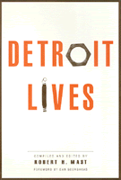

<body bgcolor="#FFFFFF" text="#000000" link="#0000FF" vlink="#CC0000" alink="#CC0000"><center><hr width="350" size="1" align="center" noshade>A story of spirit, growth, and survival in a city that reflects America's urban problems<hr width="350" size="1" align="center" noshade><p><a href="https://cdcshoppingcart.uchicago.edu/Cart/ChicagoBook.aspx?ISBN=9781566392259&&PRESS=temple" target="_top">Buy this book!</a> | <a href="https://cdcshoppingcart.uchicago.edu/Cart/Cart.aspx?PRESS=temple" target="_top">View Cart</a> | <a href="https://cdcshoppingcart.uchicago.edu/Cart/Cart.aspx?PRESS=temple" target="_top">Check Out</a></p><p></p></center><!--none//--><h1>Detroit Lives</h1>
<h3>edited by Robert H. Mast, foreword by Dan Georgakas</h3>
<P>cloth 1-56639-225-X $78.50, Oct 94, <FONT COLOR=#990033>Out of Stock Unavailable</FONT>
<br>paper 1-56639-226-8 $36.95, Oct 94, <FONT COLOR=#990033>Available</FONT>
<BR> 368 pp
6x9
</P><BLOCKQUOTE><I>"Only the numbest reader of these pages will fail to see the relationship of the urban realities herein explicated so poignantly to those that flamed so fiercely in Los Angeles in 1992. Given that context, no one should be shocked at the radical elements in the thought of these activists from so many diverse background, perspectives, and generations. To deal radically means to go to the root of things, the origins, the fundamentals. These Detroit voices insist that the problems of urban Americans have become so grave that nothing less will suffice."</I>
<br>&#151<b>Dan Georgakas</b><I></I></BLOCKQUOTE>
<p><I>Detroit Lives</I> tells the story of a city fighting for survival. Robert Mast's interviews with numerous Detroit activists and observers depict people from all walks of life who share a common commitment to the rejuvenation of their home. Despite a mass exodus from the city of over 800,000 citizens and more than 70 percent of business and industry over the last 40 years, Detroit's activists continue to organize, to demonstrate, to speak out, and to lend one another support.
<p>The compilation of these interviews provides an exchange of ideas between progressives who were and are deeply involved in the multitude of struggles for equality and liberation, from the 1930s through the 1990s. Their stories highlight the contributions and resourcefulness of working class and minorities, the struggles of women, the role of the clergy, the African American experience, and the battle to maintain quality education and social services. Represented is the collective body of Detroit progressives&#151including city and suburban dwellers, writers, lawyers, city officials, professors, union members, clergy, housing and welfare reformers, racial activists, and community organizers.
<BR>&nbsp;<h2>Contents</h2><P>
<p>Foreword &#150 Dan Georgakas
<br>Preface
<br>Introduction
<br>Prologue
<br>1. Organizing for Survival at the Grassroots
<br>2. The African-American Experience
<br>3. The Struggles of Women
<br>4. City Life, Scenes, Feelings
<br>5. The Trauma of the Politics of Race and Class
<br>6. There Is Power: The Dilemma of Organized Labor in Motown
<br>7. Theology for the People
<br>8. The Changing Visions of Detroit's White Male Left
<br>9. Analyze and Regroup: The Left Against All Odds
<br>Index
</P><BR>&nbsp;<H2>About the Author(s)</H2>
<P><b>Robert H. Mast</b> is Coordinator of the Pittsburgh Oral History Project and Adjunct Professor of Sociology at Clarion University in Pennsylvania.</P>
<BR><H2>Subject Categories</H2>
<p><A HREF="/tempress/urban.html" TARGET="_top">Urban Studies</a>
<BR>
</p>
<BR><h2 class="inpageheading">In the series</H2>
<P><I><a href="http://www.temple.edu/tempress/conflicts.html" onMouseOver="window.status='Click for other books in this series!'; return true;" onMouseOut="window.status=''; return true;" target="_top">Conflicts in Urban and Regional Development</a></i>, edited by John R. Logan and Todd Swanstrom.
</p><p><i>Conflicts in Urban and Regional Development</i>, edited by John R. Logan and Todd Swanstrom, includes books on urban policy and issues of city and regional planning, accounts of the political economy of individual cities, and books that compare policies across cities and countries.</p>
<p align="center"><a href="https://cdcshoppingcart.uchicago.edu/Cart/ChicagoBook.aspx?ISBN=9781566392259&&PRESS=temple" target="_top">Buy this book!</a> | <a href="https://cdcshoppingcart.uchicago.edu/Cart/Cart.aspx?PRESS=temple" target="_top">View Cart</a> | <a href="https://cdcshoppingcart.uchicago.edu/Cart/Cart.aspx?PRESS=temple" target="_top">Check Out</a></p><p><font face="Arial" size="1"><a href="copyright.html" onMouseOver="window.status='Web Copyright Policy';return true;" onMouseOut="window.status=''" title="Web Copyright Policy">&copy;</a> 2015 <a href="http://www.temple.edu" target="new" onMouseOver="window.status='Link to Temple University home page';return true;" onMouseOut="window.status=''" title="Link to Temple University home page">Temple University</a>. All Rights Reserved. http://www.temple.edu/tempress/titles/1016_reg.html</font></p>